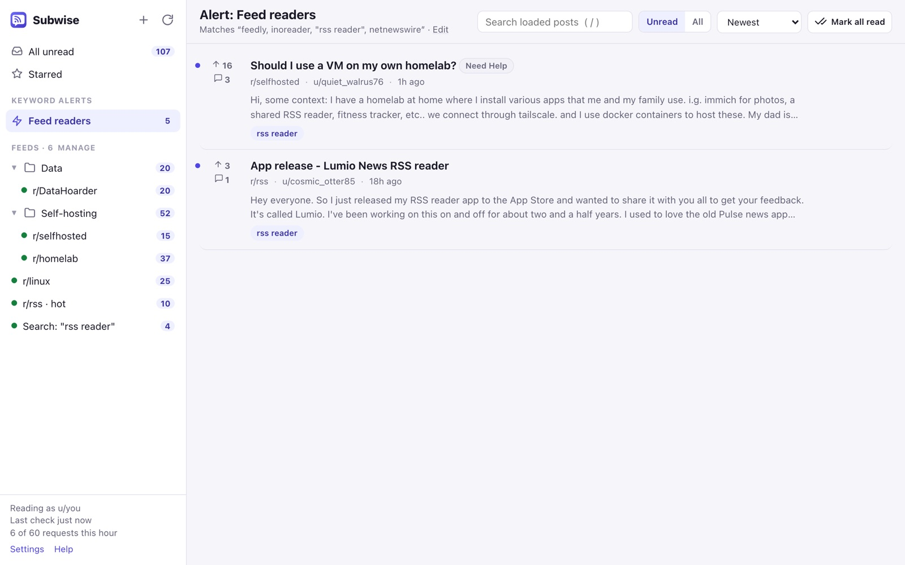

Reddit keyword alerts after GummySearch
Founders and marketers used GummySearch, F5Bot or Syften to hear when Reddit mentioned their product. GummySearch has closed and deletes its data on December 1, 2026 (GummySearch’s closing notice). Hosted tools that read Reddit from their own servers now need a commercial deal with Reddit, because the public API closes to unregistered apps in 2027 (r/redditdev).
Subwise takes a different route: it runs in your browser and reads Reddit through your logged-in session, so there’s no server in the middle and nothing to shut down.
Set up an alert
- Install Subwise and get Pro (from $3/month), then open Settings → Keyword alerts → New alert.
- Type your keywords, separated by commas:
yourproduct, "your product", competitor. Add words to ignore (hiring, giveaway), and subreddits if you only care about some. - Choose where to look: all of Reddit through search, the feeds you follow, or both (recommended).
- Choose how to hear about it: desktop notification, and any webhooks you add (Discord, Slack, ntfy, n8n, Zapier, Make).
Matches collect under Keyword alerts in the reader, with the matched words highlighted, and export to CSV or JSON for your spreadsheet or CRM.

Webhook formats
Webhooks send only the title, the Reddit link, the subreddit, the author, the score, the comment count, the time and a snippet of at most 200 characters.
- Discord: one message with up to 10 embeds.
- Slack: one message with links.
- ntfy: one push per post, tapping it opens Reddit.
- n8n, Zapier, Make, anything else: JSON,
{ "source": "subwise", "feed": "…", "items": [ { "title", "url", "subreddit", "author", "created", "score", "comments", "snippet" } ] }
How it compares
| Subwise Pro | Hosted monitors | |
|---|---|---|
| Price | $3/month or $39 once | about $9–20/month |
| Where it runs | Your browser, your Reddit session | Their servers; depends on a deal with Reddit |
| When the browser is closed | Catches up when you open it | Keeps running |
| Comments | Posts (titles and text) | Often posts and comments |